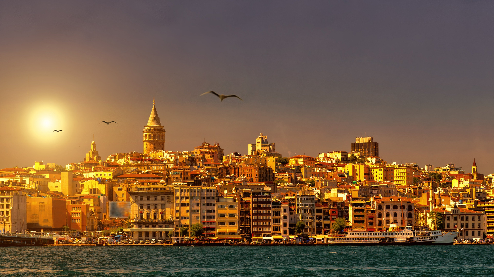

İSTANBUL

GALATA KULESİ

Osmanlı’nın gemilerini demirlediği alan olarak kullanılmış olan Dolmabahçe Sarayı, İstanbul’da gezilecek yerler arasındadır. Mustafa Kemal Atatürk, 10 Kasım 1938 yılında bu sarayda vefat etmiştir.
Doğu Roma’nın izlerini görmüş olduğumuz Yere Batan Sarnıcı, İstanbul’da bulunan en eski sarnıç konumunda yer almaktadır. Sarnıç, tarihte su depolamak üzerine kullanmıştır.
Dünyanın en büyük çarşısı ve en eski kapalı çarşılarından birisidir. Kapalıçarşı'da yaklaşık 4.000 dükkân bulunmaktadır.Yılda 91 milyon turisti ağırlayan çarşı, dünyanın en fazla ziyaret edilen turistik mekanıdır.
Fatih Sultan Mehmet, İstanbul’u fethettikten sonra yaptırdığı Topkapı Sarayı, oldukça uzun bir süre Osmanlı Hanedanlığına ev sahipliği yapmıştır.Kutsal Emanetler'in bulunduğu Hırka-i Saadet Dairesi bu sarayda bulunuyor.
Yerli Disneyland olarak bilinen ve Türkiye’nin ilk Tema Park konseptine sahip olan Vialand Tema ParkVialand Tema Park içerisinde birçok ünite bulunduran ve her yaş grubuna özel eğlenceler yer alan büyük bir tema park.

İstanbulluların her daim uğrak noktası olduğu Bebek’te, sahil boyu yürüyüş yerleri, dinlenme yerleri ve kafeleri her zaman dolup taşıyor. Özellikle Bebek Parkı’nda ve çevresindeki cafe ve restoranlarda boğaza karşı doyumsuz bir İstanbul keyfi sürebilmektedir.